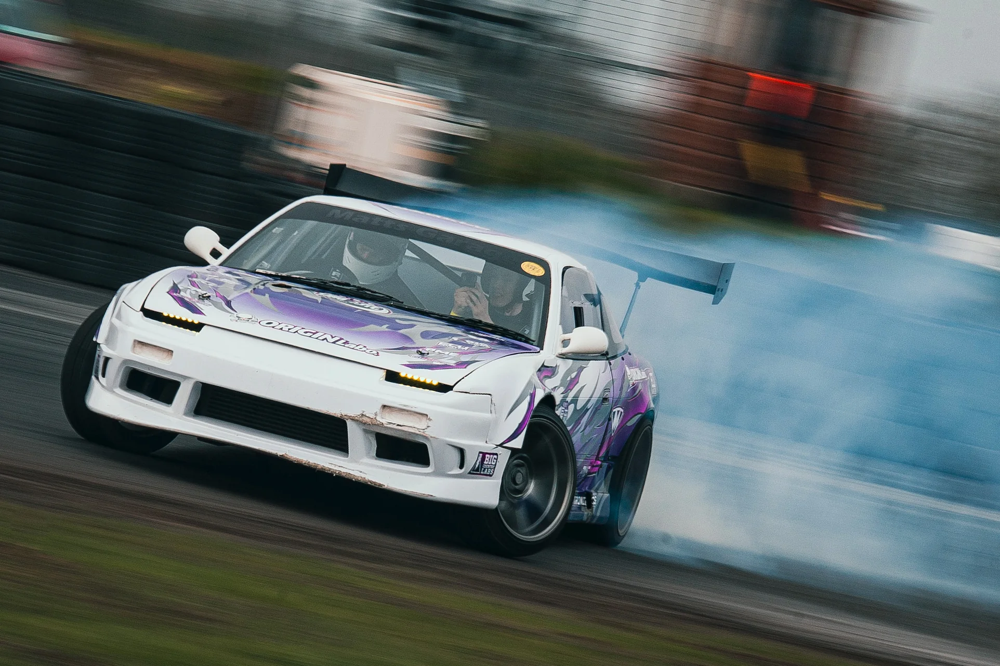
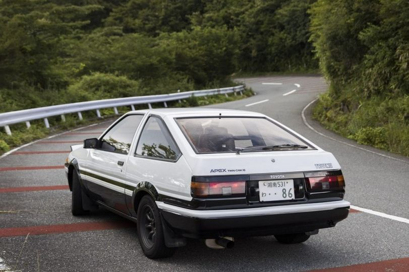

Un paso por el mundo competitivo automotriz
Las marcas japonesas no solo destacaron en el ambito diario si no tambien en el mundo de las carreras. Una de las principales diciplinas que dio a conocer a la luz estos autos al mundo fue principalmente el DRIFT.
¿Que es el drift?
El drift es una categoría de deporte encasillado en el motor, en este deporte no se compite por la velocidad o los adelantamientos, si no por la dificultad y el mantenimiento de un derrape prolongado que se realiza en ángulos casi imposibles.En este tipo de deporte entran diversos elementos como el tipo de coche, el tipo de asfalto sobre el cual se derrapa, las puntuaciones y demás elementos que comentaremos más adelante.
¿Donde se origino el Drift?
El deporte nació en las carreteras de montaña de Japón a finales de los años 70 y principios de los 80, cuando pilotos de circuito como Kuniaki Takahashi y Keiichi Tsuchiya (este último conocido como Drift King) empezaron a poner los coches de lado al acelerar cada vez más pronto a la salida de las curvas. “Así nació el drifting como deporte del motor”
